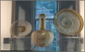
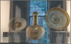

RISD MUSEUM
Asian Art Galleries
 


The Rockefeller Asian Art Gallery features devotional sculpture spanning 4,000 years from China, Japan, India, Tibet, and Thailand. Complementing these objects is a selection of Chinese mortuary works that served in burial rituals associated with Buddhist, Daoist, and Confucian beliefs. The M. Ripley "Rip" Hudner Buddha Gallery is the setting for the grand Dainichi Nyorai Buddha. The Abby Aldrich Rockefeller Japanese Print Gallery exhibits woodblock prints, and the adjacent gallery presents Asian textiles as well as exquisitely crafted objects in jade, lacquer, ceramic, and metal. (risdmuseum.org)